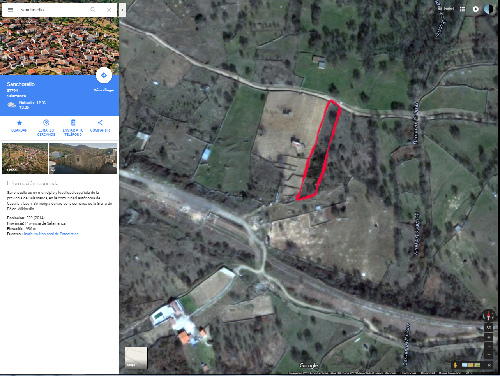

De momento estos datos son los de la estación meteorológica más cercana, y por las características del terreno es probable que no sean del todo significativos.
Están disponibles como datos abiertos en http://www.inforiego.org/, dispone de un API REST de acceso a los mismos.
| Coordenadas | 40.439983 | -5.737026 | Estación más cercana | Referencia catastral | Dirección |
|---|
Se trata de un bien inmueble de tipo con unidades constructivas y subparcelas o cultivos.
El paraje en el que se encuentra se llama en ( ).
La calificación catastral según la clase de cultivo es y una intensidad productiva de .
La superficie de la parcela son metros cuadrados.
|
|
|
| Días de lluvia 2016 | |
|---|---|
| Acumulado 2016 | |
|
|
|
| Máxima diurna 2016 | |
|---|---|
| Mínima diurna 2016 | |
| Media diurna 2016 | |
|
|
|
| Horas diarias de sol 2016 (en media) | |
|---|---|
| Horas máximas de sol 2016 | |
| Horas acumuladas de sol 2016 | |
|
|
|
| Radiación máxima neta diaria 2016 | |
|---|---|
| Radiación media neta diaria 2016 | |
| Radiación acumulada neta 2016 | |